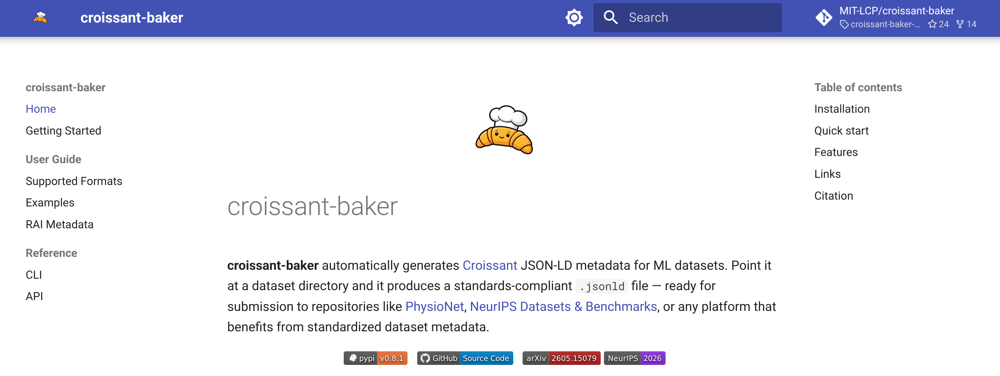

01 / A shared foundation
Why Croissant?
_sidecar.json is one metadata file per deposit batch. It is used for receipt events and provides file metadata for routing, processing and validation.
- Deposit batch
_sidecar.json- INTAKE
- NORMALIZE
- BENCHMARK
One vocabulary
Intake and BENCHMARK datasets share one format.
Native to AI and ML tools
Designed so ML pipelines can load data directly and AI agents can read and evaluate datasets.
Graph-ready
Sidecars can load as RDF into the knowledge graph.
02 / Croissant at a glance
Croissant layers
- 01
Dataset metadata
Name, description, location and standards.
Alwayssc:Dataset - 02
Resources
Files and file groups, with formats and checksums.
Alwayscr:FileObject·cr:FileSet - 03
Structure
Records, typed fields, data sources and joins. Used for dictionaries and joins of tables no standard governs.
When neededcr:RecordSet·cr:Field - 04
ML semantics
Splits, labels, bounding boxes and segmentation masks. Experimental in Croissant.
Not plannedcr:Split·cr:Label·cr:BoundingBox
03 / Clinical intake
RDDC additions
Subjects
Coded IDs and links between people and files.
Batch actions
Data deposits, withdrawal, restriction and consent.
Clinical standards
FHIR, OMOP and C-CDA versions and required fields.
Sensitivity
Dates, ZIP codes, free text and biometric identifiers.
04 / Comparison summary
Croissant + RDDC
| Topic | Croissant 1.1 | RDDC sidecar |
|---|---|---|
| Root object | sc:Dataset | One dataset per batch |
conformsTo | Croissant version | Croissant + RDDC schema versions |
| JSON-LD context | Croissant terms | Croissant + RDDC terms, embedded |
| Files | cr:FileObject | Same type + RDDC class in additionalType |
| File groups | cr:FileSet, selected by globs | Same type + optional hasPart; each file stored separately |
| Identifiers | String @id | UUID URNs for files and sidecar; local IDs for other nodes |
| File location | Usually absolute URLs | Paths relative to the batch prefix |
| Size | Optional | Required, in bytes: "1010 B" |
| Checksums | sha256 or md5 | Lowercase sha256 required; md5 optional |
| Compression | Wrapper media type | Content media type + compression |
| Record sets | Describe data structure | Optional dictionaries and joins for non-standard tables |
| License, creator, citation | Recommended | Omitted; use terms and access tiers live in the source register |
| Unknown properties | Allowed | Rejected; project extensions use additionalProperty |
| Subjects | Not in core | Subject table + per-file subjectIds (depending on data type) |
| Batch action | Not in core | add · withdraw · restrict · consent |
| Sensitivity | Partly covered by the RAI extension | Batch flags; per-file overrides for contains* |
| Provenance | Recommended via W3C PROV-O, on any object | Required attribution to the writing tool; derivation only within the batch |
05 / Example
Sidecar example for FHIR bulk files
- schema.org
- Croissant
- RDDC
- W3C PROV
{
"@context": { … },
"@id": "urn:uuid:00000001-0000-4000-8000-000000000001",
"@type": "sc:Dataset",
"conformsTo": [
"http://mlcommons.org/croissant/1.1",
"https://w3id.org/rddc/sidecar/0.1.0"
],
"name": "src-ta2-01/2026-10-b01",
"wasAttributedTo": {
"@type": "sc:SoftwareApplication",
"name": "rddc-sidecar",
"softwareVersion": "0.1.0"
},
"contributorId": "ta2-site-a",
"sourceId": "src-ta2-01",
"batchId": "2026-10-b01",
"interaction": "add",
"sensitivity": {
"directIdentifiersRemoved": true,
"containsDates": true,
"containsZipCodes": false,
"containsFreeText": false,
"containsBiometricIdentifiers": false
},
"subjects": [
{"subjectId": "P0001", "idSystem": "fhir_patient_id"},
{"subjectId": "P0002", "idSystem": "fhir_patient_id"},
…
],
"distribution": […]
}distribution[
{
"@id": "fhir_export",
"@type": "cr:FileSet",
"additionalType": "rddc:FhirBulkExport",
"name": "FHIR bulk export",
"encodingFormat": "application/fhir+ndjson",
"includes": ["fhir/*.ndjson", "fhir/*.ndjson.gz"],
"hasPart": [
{"@id": "urn:uuid:0000000a-0000-4000-8000-00000000000a"},
{"@id": "urn:uuid:0000000b-0000-4000-8000-00000000000b"}
],
"conformsTo": ["http://hl7.org/fhir/R4", "http://hl7.org/fhir/us/core/STU6.1"],
"exportTime": "2026-10-27T08:00:00Z",
"subjectCount": 2
},
{
"@id": "urn:uuid:0000000b-0000-4000-8000-00000000000b",
"@type": "cr:FileObject",
"additionalType": "rddc:FhirNdjsonFile",
"name": "fhir/Observation.ndjson.gz",
"contentUrl": "fhir/Observation.ndjson.gz",
"contentSize": "1011 B",
"encodingFormat": "application/fhir+ndjson",
"sha256": "e047db5fa705c1cd516e0939ba1e07221c45573f06accfe3c5f8a5a4bdc112f4",
"resourceType": "Observation",
"compression": "gzip",
"recordCount": 240,
"sensitivity": {"containsFreeText": true}
},
…
]Excerpt of examples/deposit_fhir_omop.json: a FHIR bulk export, OMOP snapshot and registry tables from one TA2 site.
06 / Schema
Standardized spec in LinkML
- schema.org
- Croissant
- RDDC
- W3C PROV
FileObjectFileObject:
is_a: DistributionItem
abstract: true
class_uri: cr:FileObject
slots:
- contentUrl
- contentSize
- sha256
- md5
- compression
slot_usage:
id:
range: UuidUrn
type:
equals_string: cr:FileObject
contentUrl:
required: true
contentSize:
required: true
encodingFormat:
required: true
sha256:
required: trueDataFile:
is_a: FileObject
abstract: true
slots:
- subjectIds
- recordCount
- identifier
- sensitivity
- processingHints
- wasDerivedFrom
FhirNdjsonFile:
is_a: FhirSingleTypeFile
annotations:
structure: structured
modality: clinical_fhir
fileSetClass: FhirBulkExport
slot_usage:
encodingFormat:
range: string # equals_string needs a string range; the fixed value is a valid MediaType
equals_string: application/fhir+ndjsonFhirBulkExport:
is_a: FileSet
slots:
- exportTime
slot_usage:
conformsTo:
required: true
exportTime:
required: trueGenerated from this one file
- JSON Schemas for the sidecar and the source descriptor
- JSON-LD context: Croissant 1.1 + RDDC terms
- Schema reference and vocabulary pages
- Vendored into
rddc-sidecarfrom a tagged release
Excerpt of schema/rddc_sidecar.yaml, descriptions omitted. These classes define the entries on slide 05.
07 / Trade-offs
Why Croissant: the pros
| # | Pro | Weight | Why |
|---|---|---|---|
| P1 | One vocabulary from intake to release | High | The common ML dataset format (NeurIPS, Hugging Face, Kaggle, OpenML); BENCHMARK datasets are expected to publish in it; release manifests can reuse it |
| P2 | Precedent for governed clinical data | Medium | Croissant Baker (MIT LCP) generates Croissant locally for data under DUAs: handlers for FHIR, DICOM and NIfTI, OMOP via its CSV handler; run on full MIMIC-IV |
| P3 | Reuse standard definitions | Medium | File identity, checksums, media types, file sets and record sets come from a reviewed specification |
| P4 | Graph-native format with IRIs | Medium | Sidecars can load as RDF into the knowledge graph or a catalog without a mapping step |
| P5 | Native to AI and ML tools | Medium | The format ML tooling already reads (mlcroissant, TensorFlow Datasets, Hugging Face); planned AI curation assistants can use sidecars directly |
| P6 | Generic tooling reads a sidecar | Low | mlcroissant sees files, file sets and checksums; limited at intake (C3) |
| P7 | Reuse existing extensions | Low | Official MLCommons extensions (Responsible AI, GeoCroissant); BENCHMARK can reuse the RAI fields, which Croissant Baker already writes |
| P8 | Shared provenance terms | Low | W3C PROV, the format Synapse uses for pipeline provenance |
08 / Precedent (P2)
Croissant Baker

mlcroissant.Files compressed with .gz, .bz2 or .xz are described as the underlying format (except WFDB). .zip, .tar and .tgz are reported as archives, not opened.
| Format | Extensions |
|---|---|
| CSV / TSV | .csv, .tsv |
| Parquet | .parquet |
| Spreadsheets | .xlsx, .xlsm, .xls |
| FHIR | .ndjson, .json (Bundle) |
| JSON / JSONL | .json, .jsonl |
| WFDB | .hea (with sibling .dat / .atr) |
| Images | .png, .jpg, .jpeg, .gif, .bmp, .webp, .ico, .tiff, .tif, .btf |
| DICOM | .dcm, .dicom |
| NIfTI | .nii |
| GEO SOFT | .soft |
| HDF5 | .h5, .h5ad, .hdf5 |
| VCF / gVCF | .vcf |
| BCF | .bcf |
| BAM | .bam |
| CRAM | .cram |
| SAM | .sam |
| FASTQ | .fastq, .fq |
| FASTA | .fa, .fasta, .fna |
09 / Trade-offs
The cons, and how they are mitigated
| # | Con | Weight | Mitigation |
|---|---|---|---|
| C1 | Contributor burden | Medium → Low | Clinical teams know FHIR, OMOP and C-CDA, not JSON-LD. rddc-sidecar generates the sidecar and names any failing rule; contributors use the CLI, docs and tutorial |
| C2 | Tool dependency | Medium → Medium | Producers who can't run rddc-sidecar must reimplement the rules. The generated JSON Schema checks structure; other rules are enforced only by the validator |
| C3 | Limited tooling support at intake | Medium → Medium | Accepted, not mitigated. Tools like mlcroissant can list the files but can't fetch them, and they ignore subjects, sensitivity and other RDDC fields. The payoff is at BENCHMARK and release (P1) |
| C4 | External dependency | Medium → Low | Pinned to Croissant 1.1; moving to a later version is a deliberate RDDC schema release |
| C5 | More layers to validate and maintain | Medium → Low | One LinkML source generates the JSON Schema and context; examples are checked with mlcroissant |
| C6 | Metadata generation at scale | Medium → Low | Every file needs its own entry and checksum. Tested on a 120,000-file C-CDA batch (generated in 2.4 s, validated in 1.5 s) |
10 / Big picture · planned
End-to-end simulation
One orchestrator run per batch reads the sidecar, starts the right pipelines and loads its metadata, and each pipeline run’s RO-Crate provenance, into one graph.